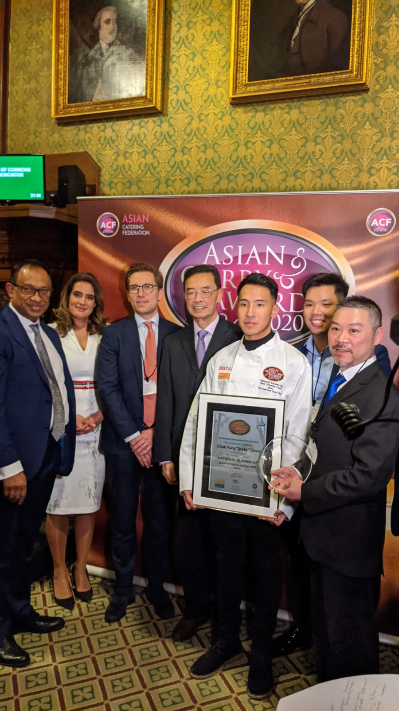
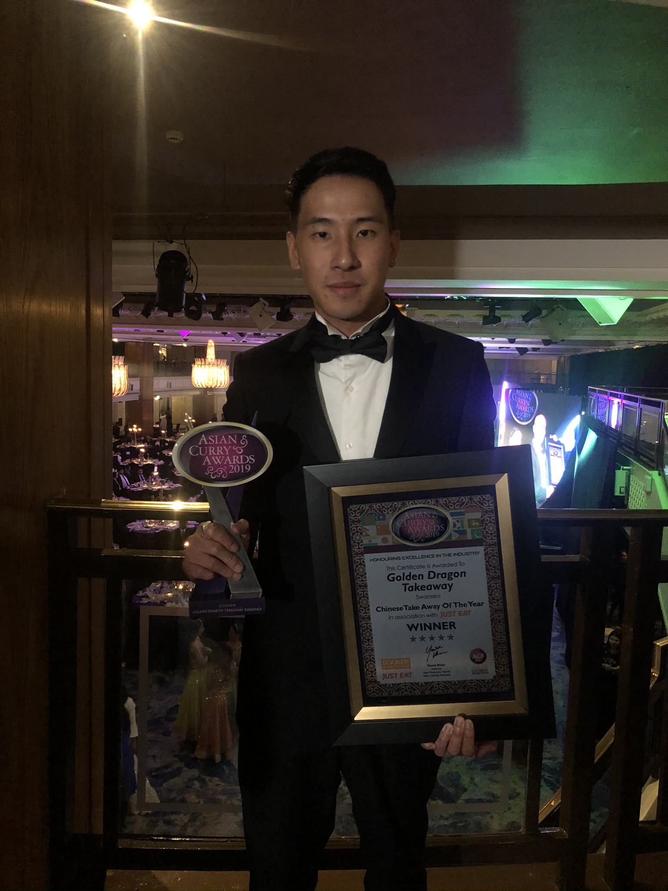

✦
Best Business Awards · Awards Intelligence
About me
站在交會點：以 AI 與科技，部署下一個世代
Navigating the Nexus of AI, Technology, and Society.

Chan Chak Fung · 陳澤鋒
I am an Entrepreneur, AI Researcher, Technology Observer, and Drone Industry Expert working at the nexus of strategic corporate governance and deep technical execution.
With over 7 years of cross-sector success as a General Manager and Technical Director, I specialise in spearheading high-stakes Digital Transformation, managing strategic P&L, and driving organisational restructuring. My focus as an AI Researcher is on bridging cutting-edge capabilities — such as AI APIs, intelligent automation workflows, and Web3 — with core business operations to capture high-value market share.
As a Technology Observer, I closely analyse how emerging tech reshapes future society. Today, I translate these macro insights into practical execution as a Drone Industry Expert, leading elite engineering teams, navigating complex regulatory governance, and architecting scalable enterprise solutions for the low-altitude economy.
”Let’s deploy the future together.”
My journey
From Engineering Foundations to Executive Leadership: Building Businesses, Transforming Industries, and Advancing Hong Kong’s Low Altitude Economy.
Secondary school, Hong Kong
Secondary school, Hong Kong
Foundation year · Swansea, Wales, UK
BEng Electronic & Electrical Engineering
Innovative & Operating Director · 4 outlets: Cardiff, Swansea, London, Birmingham
Ambassador / Volunteer
Managing Director & Co-Founder · Web3 & Metaverse Startup
Sold all UK businesses and returned to Hong Kong
Engineering & Technology Manager
Director
The Chinese University of Hong Kong
Founder & Director
Current / Ongoing — highlighted milestones represent my active professional and academic commitments.
Recognition & Awards
Before pivoting to AI and technology, Chan Chak Fung built award-winning hospitality businesses across the UK — earning national recognition for innovation, operations and customer experience from 2018 to 2023.
Best Business Awards · Awards Intelligence
Golden Chopsticks Awards
Asian Curry Awards
Good Food Awards
Just Eat Best Takeaway Awards
Golden Chopsticks Awards
Asian Curry Awards
Just Eat Best Takeaway Awards
The X Factor Advert · Sponsored by Just Eat



In the press
National · Food
Golden Dragon Takeaway named among the best takeaways across the entire country by The Sun.
Wales · Food & Drink
Golden Dragon Takeaway officially recognised as the best Chinese restaurant in Wales.
Wales · Food & Drink
The moment Golden Dragon was officially crowned the best takeaway — as reported by Wales Online.
Wales · Lifestyle
A personal feature on Chan Chak Fung — the man behind the counter with a story beyond the kitchen.
UK · Awards Coverage
Foodepedia covers the prestigious Golden Chopstick Awards — where Golden Dragon Takeaway took top honours.
Qualifications
Professional credentials spanning AI, aviation, engineering safety, BIM and gastronomy.
INDUSTRIAL SAFETY
ARTIFICIAL INTELLIGENCE
AVIATION
BUILDING INFORMATION MODELLING
BUILDING INFORMATION MODELLING
GASTRONOMY
MY APPROACH
Strip away the jargon and focus on the ideas that matter.
Connect every technology conversation to real value and outcomes.
Build confidence, curiosity and momentum—not fear of change.
Speaker profile
Available for keynotes, panel discussions and workshops across six signature topics.
Book a talk ↗How AI is reshaping operations, strategy and competitive advantage — and what leaders must do now to stay ahead.
The irreplaceable human edge in business development — why relationships, empathy and selling skills remain critical.
The emerging LAE landscape — regulations, commercial opportunities and how businesses can position for the drone economy.
Practical pathways for young people to build income, develop skills and think like entrepreneurs in the digital age.
Turning technology hype into business results — a no-jargon guide to identifying and implementing the right tools.
Navigating uncertainty, building resilience and leading teams through technological and societal disruption.
Bring these ideas to your audience